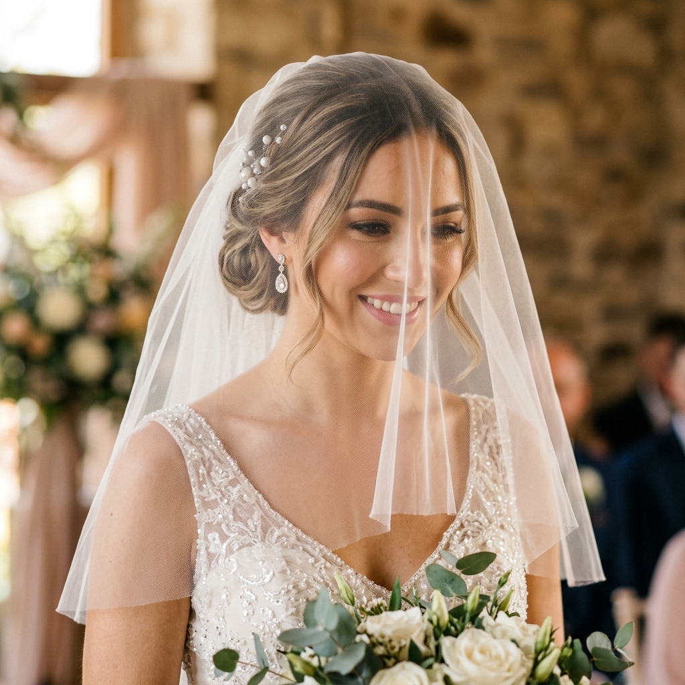
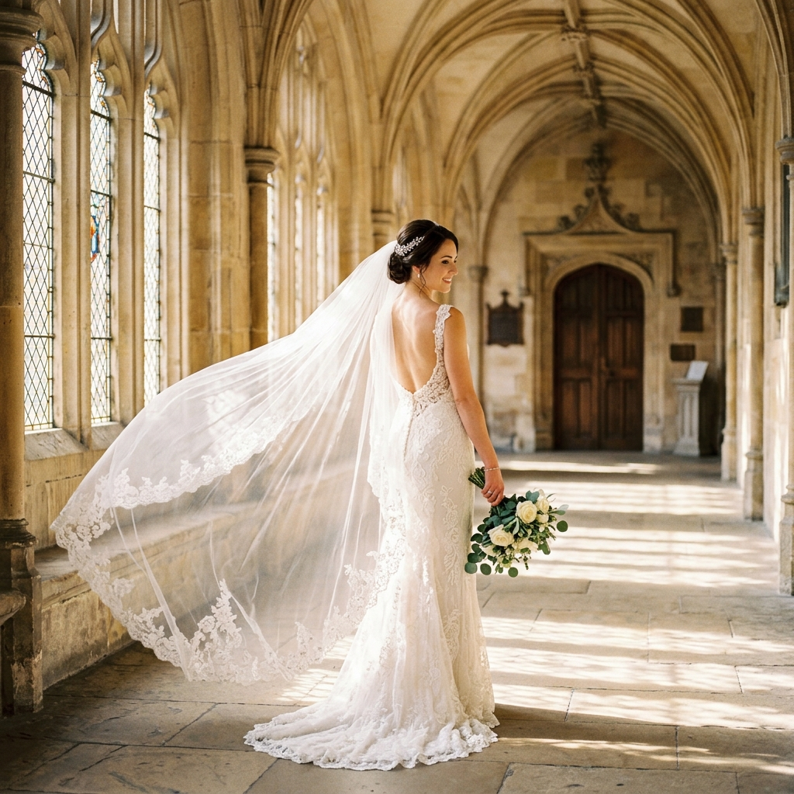
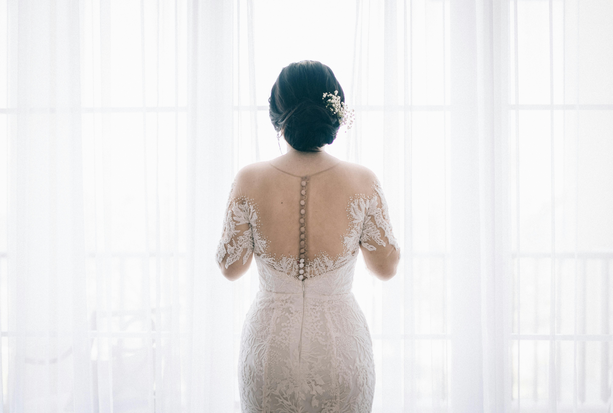
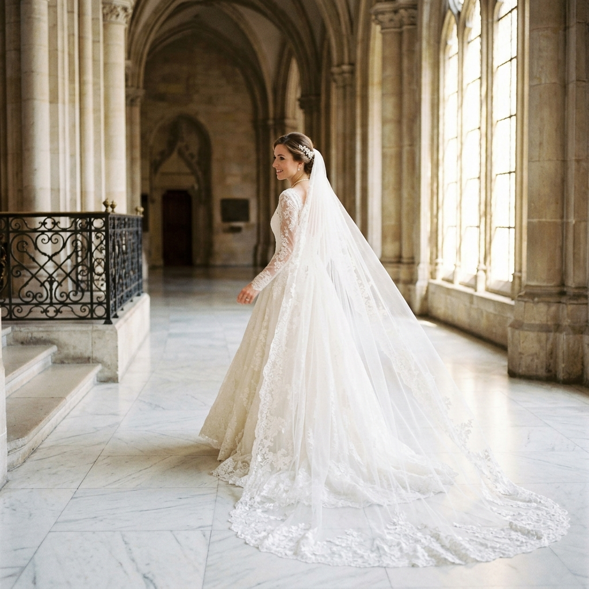

From the delicate blusher to the sweeping cathedral train — every length tells a different story. Let us help you find yours.

The blusher veil is a short, face-covering layer. Traditionally worn over the face during the ceremony and lifted by the partner at the altar.
The right veil elevates your chosen wedding aesthetic into something truly unforgettable.
Elbow or fingertip lengths flutter beautifully in light breeze. Soft tulle and lightweight lace edges work best.
A full chapel or cathedral veil creates a regal processional. The longer the aisle, the longer the veil.
Blusher or birdcage styles suit beach weddings. Minimal fabric reduces wind resistance for comfortable wear.
Cathedral sweeps complement the grandeur of a formal ballroom. Pair with a full ball gown for maximum impact.
Featherweight luxury with a natural sheen. The most popular choice for all lengths.
Structured body with great shape retention. Ideal for cathedral veils with drama.
Near-invisible fine mesh — the top choice for blusher and face-frame styles.
Stiff, formal body for structured shapes. Creates a powerful red-carpet presence.
The edge finish defines the character of your veil — from barely-there raw cuts to lavish lace borders.

Minimalist · Modern
Clean, unhemmed edge with a soft floating finish for a barely-there, effortless bridal look.

Romantic · Classic
A band of matching or contrasting lace frames the veil's edge exquisitely.

Luxe · Couture
Handset freshwater pearls along the hem — each one individually placed.
Your veil is a lifelong heirloom. With the right care, it will remain as breathtaking as the day you wore it.
Spot-clean with cold water and gentle lingerie wash. Never machine wash tulle or lace. Professional dry cleaning recommended for embellished styles.
Loosely roll around acid-free tissue paper and store in a breathable muslin bag. Avoid plastic which traps moisture and can yellow fabric.
Use a cool iron with a pressing cloth, or steam from a distance. Never apply direct heat — lace can melt under high temperature.
We offer professional preservation services. Contact us to box and preserve your veil for future generations.